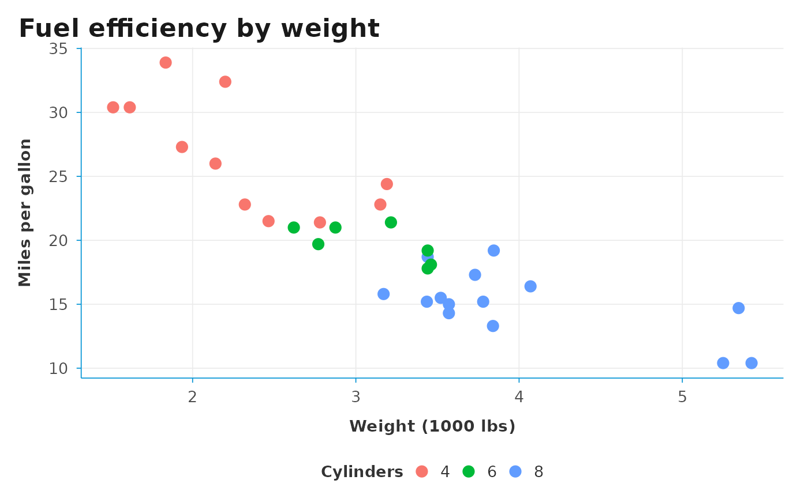
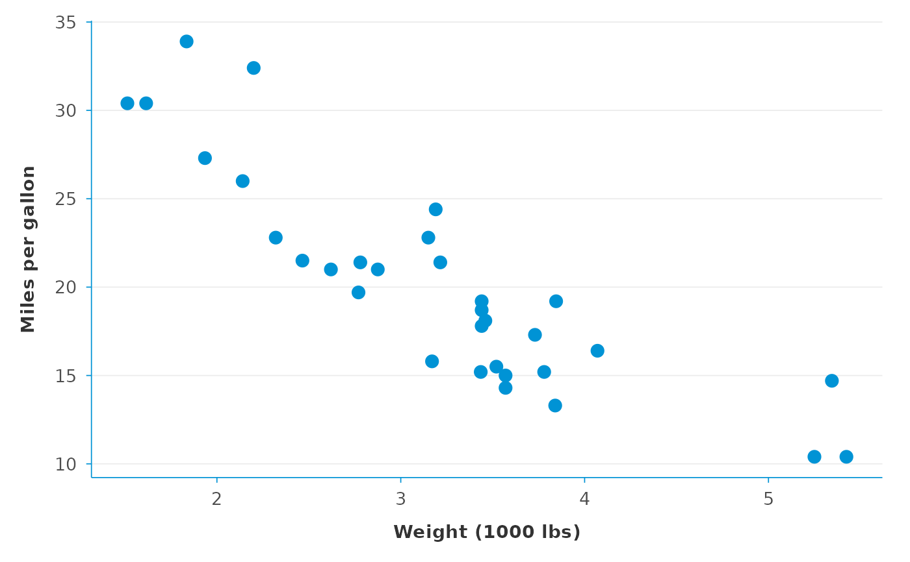

A clean, modern theme tuned for WHO and global-health publications.
Removes the panel border, draws light grid lines, and uses a muted
text colour so that the data — not the chart chrome — is the visual
focus. The grid argument controls which direction(s) the grid
lines run, so the theme works equally well for vertical bars,
horizontal bars (via coord_flip()), scatter plots, and line charts.
Usage
theme_dsi(
base_size = 12,
base_family = "",
accent = "#0093D5",
grid_color = "grey92",
grid = c("both", "x", "y", "none"),
legend_position = "bottom"
)Arguments
- base_size
Base font size in points. Default
12.- base_family
Base font family. Default
""(system default). Set to"sans","Arial","Helvetica", or"Calibri"for a specific look. Empty default keeps the package portable on CRAN's Linux check machines, where Calibri is unavailable.- accent
Accent colour used for axis lines and as a default for highlight elements. Default
"#0093D5"(WHO blue). Pass any colour string.- grid_color
Colour of the major grid. Default
"grey92"— a very light grey, close to bbplot and OECD style.- grid
Which direction(s) to draw major grid lines. One of
"both"(default — draws both horizontal and vertical, works correctly undercoord_flip()),"y"(only horizontal grid lines, the look used in DSIR <= 0.5.x),"x"(only vertical grid lines), or"none".- legend_position
Position of the legend. Default
"bottom". Pass"none","top","right", or a numeric vectorc(x, y).
See also
theme_dsi_facet() for a sibling theme tuned for faceted plots.
Examples
library(ggplot2)
# Default — grid in both directions, works under coord_flip()
ggplot(mtcars, aes(wt, mpg, color = factor(cyl))) +
geom_point(size = 3) +
theme_dsi() +
labs(title = "Fuel efficiency by weight",
x = "Weight (1000 lbs)", y = "Miles per gallon",
color = "Cylinders")

# Minimal look — only horizontal grid lines
ggplot(mtcars, aes(wt, mpg)) +
geom_point(size = 3, color = "#0093D5") +
theme_dsi(grid = "y") +
labs(x = "Weight (1000 lbs)", y = "Miles per gallon")
